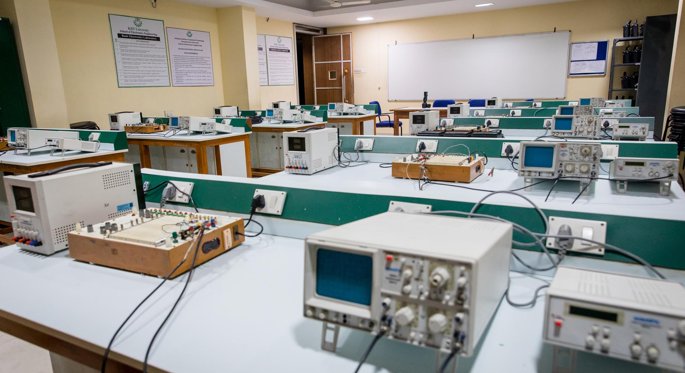
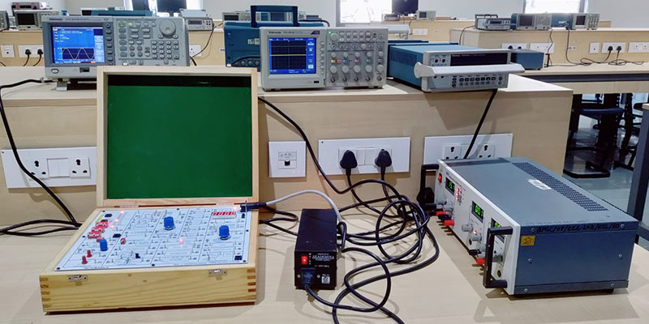
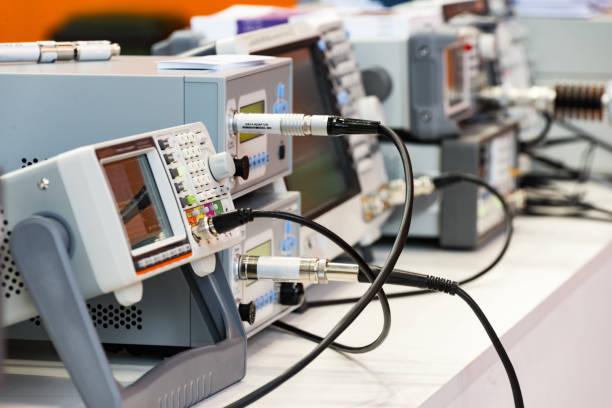
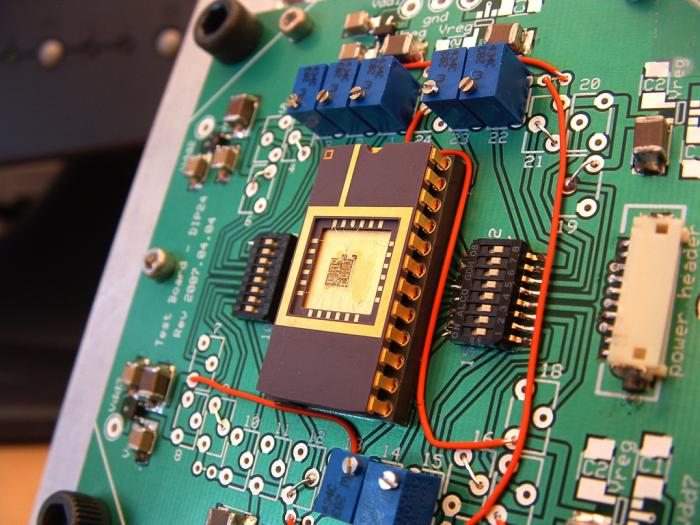
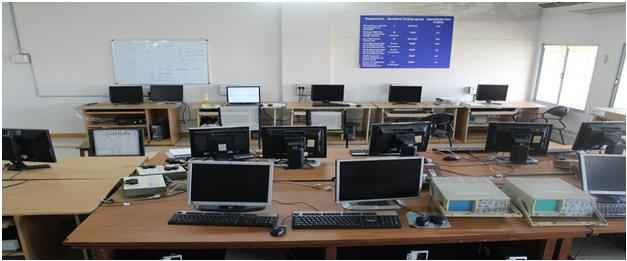
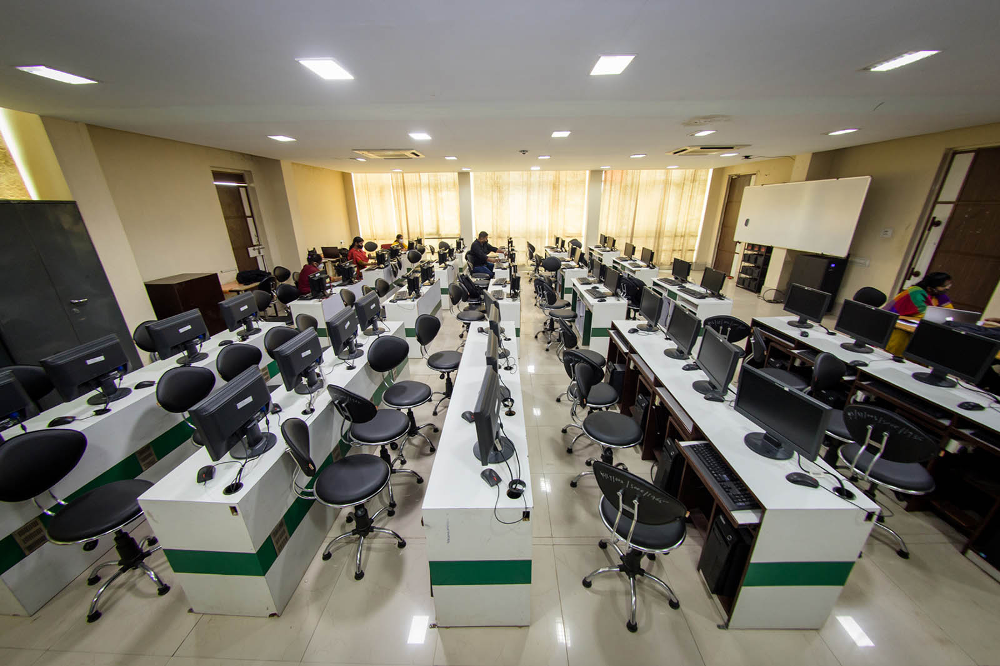
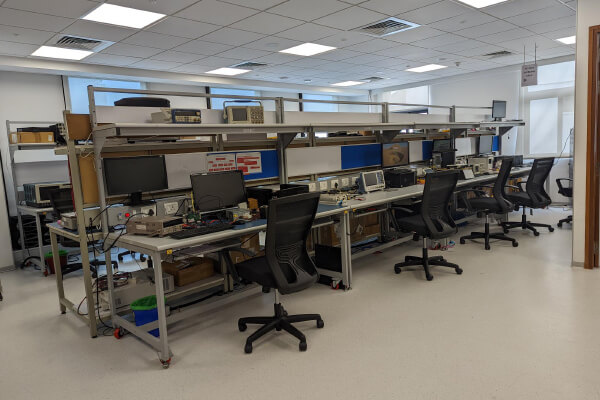

ADUSUMILLI ASWARDHA NARAYANA MURTHY&VALLURIPALLI VENKATA RAMA SESHADRI RAO
Aproved by APSBTET Mangalagiri,Vijayawada
SeshadriRao Knowledge Village,Gudlavalleru,Krishna District-521356
Electronics and communication engineering (ECE) is a discipline of engineering that involves developing and testing electronic circuits and communication devices like transmitters, receivers and integrated circuits. Engineers who specialise in this domain often need to utilise the principles of digital and analogue transmission and reception of signals. This field of engineering also involves working with microprocessors, solid-state devices, satellite communication tools, circuits and electronic devices.
☛Electronic device is an overarching term that refers to a hardware whose function is to control the flow of electrical energy for the purpose of processing information or controlling a system.Electronics laboratory is used for examining operating principles of the electronic devices and obtaining the characteristics of electronic circuit components.
☛Design and practical applications of power supplies, amplifiers, oscillators and various digital electronic circuits are studied.Examples of these devices include computers, mobile devices, and smart televisions
☛Digital communication uses digital signals for the transmission of information. Analog communication uses signals that can be represented by sine waves. Digital communication uses signals that can be represented by square waves. Analog communication signals consist of continuous values.
☛Analog signals are a type of signal sent in a continuous wave. These waves can vary in both amplitude and frequency. Digital signals are signals that are represented in discrete values. This means there is a finite amount of values that the signal can be converted into.
☛In the Electrical Circuit Lab students can create their own electrical circuits and do measurements on it. In the circuits the students can use resistors, light bulbs, switches, capacitors and coils. The circuits can be powered by a AC/DC power supply or batteries.
☛There is an ammeter, voltmeter, wattmeter and an ohmmeter. There is also a version of the Electrical Circuit Lab in which data can be collected. Students can analyze the collected data by creating graphs of the data and use the graphs in the conclusion tool.
 ☛
Electronics & Communication Engineering deals with the electronic devices, circuits, communication equipments like transmitter, receiver, integrated circuits (IC). It also deals with basic electronics, analog and digital transmission & reception of data, voice and video, microprocessors, satellite communication, microwave engineering, antennae and wave progression.
☛
Electronics & Communication Engineering deals with the electronic devices, circuits, communication equipments like transmitter, receiver, integrated circuits (IC). It also deals with basic electronics, analog and digital transmission & reception of data, voice and video, microprocessors, satellite communication, microwave engineering, antennae and wave progression.
☛It aims to deepen the knowledge and skills of the students on the basic concepts and theories that will equip them in their professional work involving analysis, systems implementation, operation, production, and maintenance of the various applications in the field of Electronics and Communications Engineering.
☛An integrated circuit (IC), also known as a microchip, computer chip, or simply chip, is a small electronic device made up of multiple interconnected electronic components such as transistors, resistors, and capacitors. These components are etched onto a small piece of semiconductor material, usually silicon.
☛Integrated circuits are used in a wide range of electronic devices, including computers, smartphones, and televisions, to perform various functions such as processing and storing information. They have greatly impacted the field of electronics by enabling device miniaturization and enhanced functionality.
☛The Micro-controller Laboratory focuses on study of instruction and logic knowledge with theory study amongst the students. The laboratory experiments are equipped to cater to curriculum needs of diploma, graduate and post graduate programs along with adequate course. Instruction and logic via different assembly language instructions are taught.
☛The laboratory hosts variety of state-of-the-art micro-controller kits to enhance the practical knowledge of the students. The devices present in the laboratory offer a wide range of micro-controller capabilities at a significantly lower cost than that of dedicated devices.
☛The VLSI Laboratory provides a Linux based high performance computing platform used for teaching integrated circuit design courses, such as Analog Electronic Design, Design of Digital Systems, Advanced Topics in Digital System Design.
☛This program provides advanced education and training in designing Very Large Scale Integration.This technology plays a crucial role in developing integrated circuits and electronic systems, powering the ever-evolving world of modern electronics.
☛ The embedded systems lab is well equipped with high-end test instruments and assembly and repair stations for product development and testing. The lab also has a Thermal chamber for temperature cycle testing. A wing in the lab also caters to limited product assembly of finished products with test jig supports.
☛The Embedded Systems lab supports teaching and research in embedded systems and re-configurable hardware technology. We are engaged in research on architecture, design, and tools for networked and embedded computing and communication systems.